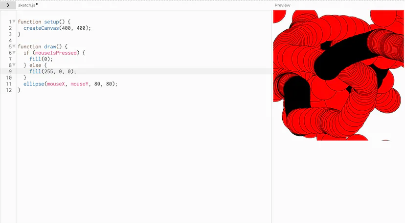

Computer Vision Opdrachten
Opdracht 3Bij opdracht 3 is het de bedoeling om kleur te geven aan de cirkels. |
 | |
Opdracht 7Bij opdracht 7 is het de bedoeling om te experimenteren met één van de voorbeelden die gegeven waren. Wat ik gemaakt heb is dat de achtergrond reageert op de pose van je hand. Bij een open hand is de achtergrond groen en bij een gesloten hand wordt de achtergrond rood. |
||
Opdracht 8Bij opdracht 8 moest ik gaan expirimenteren met de punten in je pols die gevolgt worden. Wat ik gemaakt heb is een witte balk die gevormd wordt door de twee punten van de polsen. |
||
Opdracht 9Bij opdracht 9 is het de bedoeling om te detecteren of iemand juicht. Hiervoor heb ik de punten in mijn pols en de punten van mijn schouders gebruikt. |
||